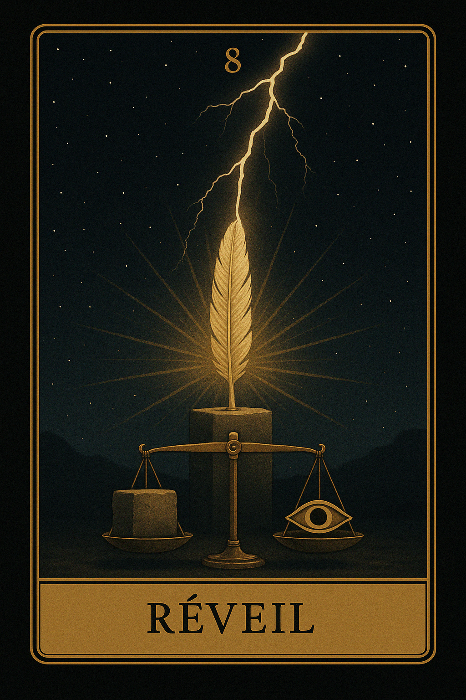
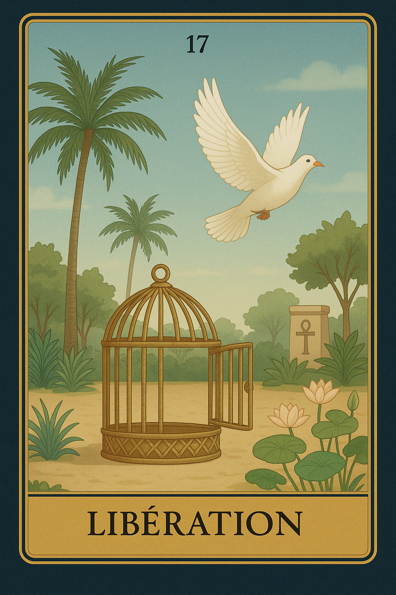
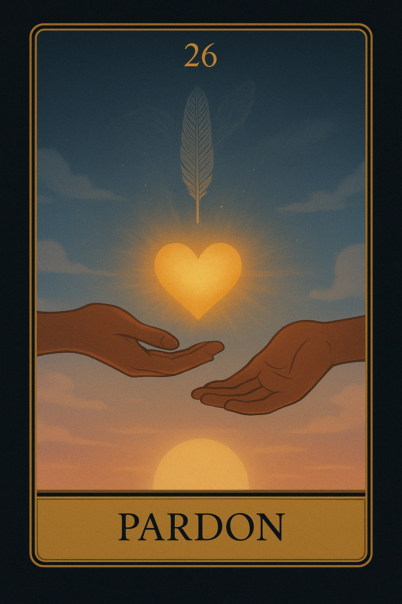
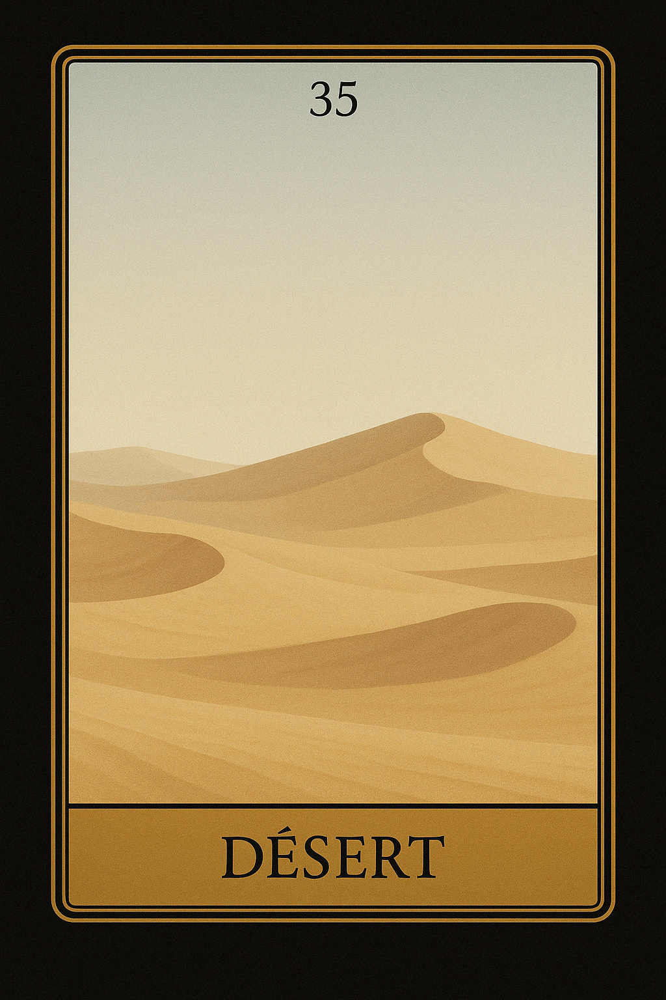
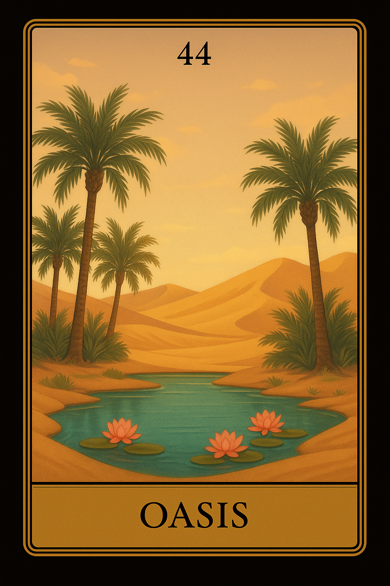
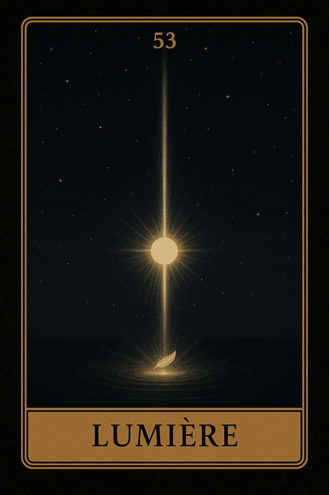
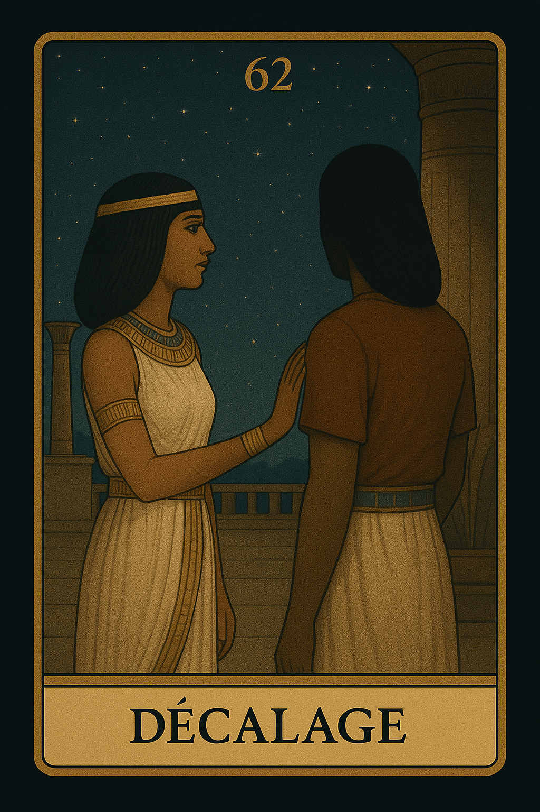
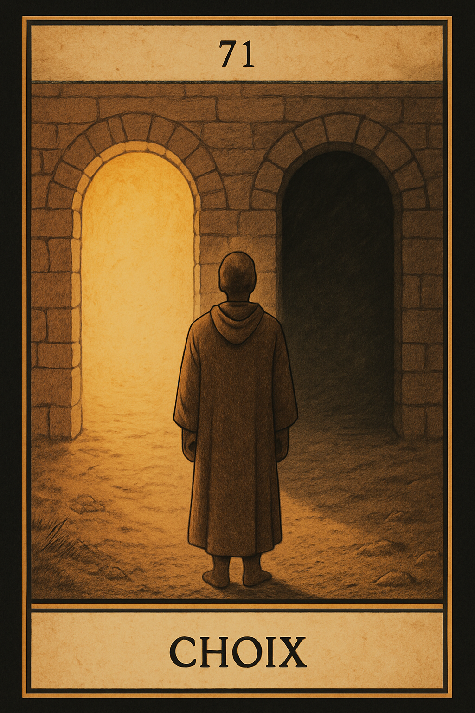

Famille 8 – Maât (Uranus)
Cette famille explore le discernement, le jugement intérieur et la quête de vérité. Elle est liée à Uranus et à Maât, déesse de la justice, de l’équilibre cosmique et des lois universelles. Elle révèle comment nous pesons nos choix, assumons nos responsabilités et cherchons l’équité en nous et autour de nous.
Carte 8 – Réveil
Mots-clés : Révélation, Prise de conscience, Changement soudain, Libération, Réveil intérieur
Numérologie : 8 – Transformation, Pouvoir, Résilience, Révélation
Planète principale : Uranus
Divinité principale : Maât
Planète secondaire : Soleil
Divinité secondaire : Râ
Interprétation de la carte 8 : Réveil (droite)
1. Caractère de la personne
La carte Réveil symbolise une personne qui est dans une phase de changement soudain ou de révélation intérieure. Sous l'influence de Uranus et de Maât, cette personne peut être en train de vivre un éveil profond qui bouleverse ses anciennes croyances et ses schémas de pensée. Cela pourrait signifier une personne avec un caractère réceptif aux changements, prête à remettre en question ses convictions et à adopter de nouvelles perspectives. Elle a souvent une grande capacité d'adaptation et de résilience face aux transformations. L’influence secondaire du Soleil et de Râ éclaire ce processus de transformation, apportant lumière, clarté et optimisme dans ce passage souvent déstabilisant, mais essentiel pour une croissance personnelle.
2. Plan affectif
Dans le domaine affectif, Réveil peut symboliser un moment où la personne prend conscience d'un changement majeur dans ses relations. Cela peut être un réveil émotionnel où des vérités jusque-là cachées ou ignorées sont désormais révélées, apportant une nouvelle vision des choses. Cette carte pourrait aussi indiquer une relation qui évolue soudainement, où les attentes ou les sentiments se transforment de manière radicale. L’influence de Uranus peut rendre cette transition assez surprenante ou inattendue, mais l’influence du Soleil et de Râ aide à libérer les émotions et à voir la situation sous un autre angle, avec un éclairage plus positif et évolutif.
3. Plan matériel
Sur le plan matériel, Réveil peut signifier un changement brusque ou une révélation importante qui impacte les aspects financiers ou professionnels. Cela pourrait être la prise de conscience d’une nouvelle opportunité professionnelle, ou d’un besoin de réajuster sa stratégie financière. L'influence de Uranus peut apporter un changement soudain qui bouscule la stabilité matérielle, mais l'influence du Soleil et de Râ permet à la personne de trouver des solutions innovantes, de s'adapter à ces changements et de profiter des nouvelles opportunités. Cette carte indique une phase de réorganisation où des choses anciennes doivent être laissées derrière pour permettre un nouveau départ.
4. Plan professionnel
Dans le domaine professionnel, Réveil peut symboliser un changement soudain ou une révélation sur la direction à prendre dans la carrière. Cela pourrait être une prise de conscience que l'on doit changer de voie ou qu’une nouvelle perspective s’offre à la personne dans sa carrière. L'influence de Uranus apporte de l'inattendu, souvent sous forme de révélation ou de transformation majeure, mais l'influence du Soleil et de Râ assure qu’il s’agit d'un changement positif qui ouvre de nouvelles portes. Cela peut également signaler un éveil de créativité dans le travail, permettant à la personne de s'épanouir professionnellement en suivant un nouveau chemin.
5. Plan spirituel
Spirituellement, Réveil symbolise un éveil spirituel profond, un moment où la personne prend conscience de sa vraie nature ou de son but spirituel. Cela peut également représenter un changement soudain dans la manière de voir la vie et les croyances spirituelles. Sous l'influence de Uranus, cette carte représente une libération spirituelle importante, parfois après une période de confusion ou d'inertie. L’influence du Soleil et de Râ adoucit le processus, apportant une lumière intérieure qui permet à la personne de comprendre profondément son chemin spirituel. C’est un moment de révélation qui ouvre de nouveaux horizons spirituels et qui marque un nouveau départ dans la quête de vérité.
Carte 8 : Réveil (inversée)
Lorsqu'elle est inversée, la carte Réveil symbolise un manque de prise de conscience, une période de confusion ou un retard dans le changement. Cela peut indiquer que la personne est dans une phase de déséquilibre, où le réveil n'a pas encore eu lieu ou est repoussé, entraînant stagnation ou blocages dans les domaines de la vie concernés.
1. Caractère de la personne
En position inversée, cette carte peut montrer une personne qui refuse de voir certaines vérités ou détourne son regard de la réalité. Elle peut être dans une période de négation ou de manque d’ouverture aux changements nécessaires dans sa vie. L’influence de Uranus dans cette carte inversée indique qu’une opportunité de transformation est refusée ou retardée, empêchant ainsi la personne de se libérer des anciennes croyances ou de changer de perspective. L'influence secondaire du Soleil et de Râ, bien que toujours présente, semble éteinte, rendant la situation plus difficile à surmonter.
2. Plan affectif
Sur le plan affectif, l’inversion de Réveil peut symboliser une relation où l’un des partenaires refuse de voir les problèmes ou les déséquilibres qui existent dans la relation. Cela peut indiquer un manque de communication ou une dissimulation des vérités qui bloquent la croissance de la relation. La personne pourrait être dans une phase de confusion émotionnelle, incapable de comprendre les signes ou de prendre conscience des changements nécessaires dans la relation.
3. Plan matériel
Sur le plan matériel, Réveil inversé montre un manque d’opportunités ou un retard dans la prise de décisions importantes concernant les finances ou le travail. La personne pourrait être bloquée dans une situation matérielle où elle refuse de changer d’approche ou de prendre des mesures pour améliorer la situation. Cela peut aussi signifier une confusion dans les projets matériels, ou des problèmes non résolus qui empêchent l’avancée.
4. Plan professionnel
Dans le domaine professionnel, l’inversion de Réveil indique que la personne pourrait se retrouver dans l'inaction ou dans un état de conflit intérieur quant à sa direction professionnelle. Elle pourrait avoir du mal à prendre conscience des nouvelles opportunités ou à voir une vision claire de son avenir professionnel. Cette carte inversée suggère que des changements sont nécessaires, mais que la personne résiste à cette prise de conscience ou est bloquée dans sa situation actuelle.
5. Plan spirituel
Spirituellement, Réveil inversé symbolise une désorientation spirituelle, où la personne se trouve bloquée dans des croyances erronées ou refuse de voir la vérité sur son chemin spirituel. Il peut y avoir un manque de clarté ou une incapacité à se libérer des anciennes illusions spirituelles. Cependant, l'influence du Soleil et de Râ reste présente, offrant toujours une opportunité de transformation spirituelle, mais la personne doit d’abord accepter d'affronter ses illusions et ouvrir les yeux sur une nouvelle voie.
Résumé de la carte 8 : Réveil
La carte Réveil représente un moment de révélation et de prise de conscience profonde. Elle symbolise un changement soudain qui brise les anciennes croyances pour ouvrir la voie à un nouveau départ. En position inversée, elle indique un blocage dans ce processus de transformation, où la personne pourrait être bloquée par la confusion ou l'inaction, mais avec la possibilité de retrouver la lumière une fois que les obstacles internes seront surmontés.
Carte 17 – Libération
Mots-clés : : Révolte, Évasion, Délivrance, Indépendance, Renouveau
Numérologie : 17 – Libération, Évolution, Révélation, Changement radical
Planète principale : Uranus
Divinité principale : Maât
Planète secondaire : Terre
Divinité secondaire : Geb
Interprétation de la carte 17 : Libération (droite)
1. Caractère de la personne
La carte Libération symbolise une personne qui brise les chaînes des limitations internes ou externes. Elle représente une âme libre, prête à se libérer des contraintes ou des situations oppressantes. Sous l’influence de Uranus / Maât, la personne peut ressentir une révolte intérieure, une rébellion contre les injustices ou les situations d’enfermement, cherchant à réinventer sa vie ou à rompre avec le passé. Cette énergie de renouveau apporte la possibilité de changer radicalement de direction ou de transformer sa vie. L’influence secondaire de Terre / Geb ancre cette énergie de révolte dans des actions concrètes, permettant à la personne de prendre son indépendance et de se reconnecter à ses racines tout en cherchant à se libérer des vieilles entraves.
2. Plan affectif
Sur le plan affectif, Libération indique un mouvement vers l’indépendance dans une relation. Cela pourrait signifier la fin d’une relation toxique ou l’émergence d’un moment où l’un des partenaires se détache d’une dynamique relationnelle qui le maintenait dans un rôle passif ou soumis. Cette carte parle d’un renouveau dans les relations, où l’on se libère des schémas répétitifs ou de la soumission émotionnelle. L’influence de Uranus / Maât évoque des moments où il est nécessaire de remettre en question les règles et les attentes dans la relation, et l’influence secondaire de Terre / Geb offre une stabilité intérieure pour prendre des décisions claires et équilibrées dans ce processus de libération.
3. Plan matériel
Sur le plan matériel, Libération peut symboliser un changement radical dans la situation professionnelle ou financière de la personne. Cela peut représenter un départ d’un emploi ou une décision importante qui met fin à une période de confinement ou de dépendance matérielle. La carte évoque l’idée de prendre le contrôle de sa vie matérielle, d'oser se libérer des contraintes financières ou professionnelles et d’aller vers une autonomie plus grande. Uranus / Maât offre la possibilité de briser les chaînes des anciennes croyances ou structures qui empêchaient une réelle évolution matérielle, tandis que Terre / Geb assure que cette transformation se fasse de manière pratique et réaliste.
4. Plan professionnel
Dans le domaine professionnel, Libération représente une période où il devient nécessaire de rompre avec le passé, de quitter un emploi ou de se libérer d’une situation professionnelle oppressante. Cela peut signifier un changement de direction, où l’on décide de se lancer dans une nouvelle carrière ou d'entreprendre un projet personnel qui nous permet d’être plus indépendant. L'influence de Uranus / Maât incite à la révolution professionnelle, à rompre avec les conventions pour créer quelque chose de nouveau et d’authentique, tandis que Terre / Geb nous rappelle qu'il est important de garder un ancrage pratique et de consolider nos bases professionnelles pour garantir cette libération durable.
5. Plan spirituel
Spirituellement, Libération symbolise un moment où la personne se délivre des chaînes mentales ou spirituelles. Cela pourrait être une évasion d'une pensée limitante, d’une croyance religieuse restrictive, ou d’une vision spirituelle étroite. C’est une révolution intérieure, où l’on prend conscience de l’importance de son indépendance spirituelle. L’influence de Uranus / Maât nous invite à abandonner les dogmes ou les structures imposées, à rechercher une vérité personnelle qui dépasse les conventions. Terre / Geb nous aide à garder cette libération ancrée dans la réalité, afin que cette transformation spirituelle se base sur des valeurs solides et pratiques.
Carte 17 : Libération (inversée)
Lorsqu'elle est inversée, Libération symbolise une résistance au changement ou un enfermement intérieur. Cela peut signifier que la personne est bloquée dans une situation où elle se sent oppressée mais ne parvient pas à rompre les chaînes. L’inversion de cette carte peut indiquer une personne qui résiste à prendre des mesures pour se libérer d’une situation qui la limite, soit par peur de l'inconnu, soit par inertie. Les blocages émotionnels ou psychologiques peuvent être particulièrement présents.
1. Caractère de la personne
En position inversée, la carte Libération indique une personne qui a du mal à se détacher de ses limitations. Elle pourrait être dans un état de stagnation, incapable de se libérer d’une situation qui la contraint. Cela peut être une personne qui se sent prisonnière de ses propres croyances, de ses relations, ou de ses choix passés, et qui refuse de se libérer de cette restriction intérieure. Elle peut également refuser le changement nécessaire et préférer rester dans une zone de confort, même si elle ressent un besoin de transformation.
2. Plan affectif
Sur le plan affectif, Libération inversée symbolise une relation qui maintient la personne dans un rôle de soumission ou de dépendance. Cela peut également signifier une relation où l’une des personnes refuse de se libérer des chaînes émotionnelles, reste dans des relations toxiques, ou ne parvient pas à quitter une situation affective qui l’étouffe. Il peut aussi s'agir d'un manque d'indépendance émotionnelle, où la personne reste attachée à une relation qui ne la sert plus.
3. Plan matériel
Sur le plan matériel, Libération inversée indique qu'il y a une résistance à se libérer d’une situation matérielle ou financière contraignante. Cela pourrait signifier que la personne est bloquée dans une situation professionnelle ou financière qui ne lui permet pas de se développer. Elle pourrait aussi se retrouver dans une situation de dépendance matérielle qu'elle refuse de quitter, par peur de l’inconnu. L’inversion de cette carte peut également indiquer un manque de courage pour faire face aux défis matériels ou financiers.
4. Plan professionnel
Professionnellement, Libération inversée indique une stagnation dans le travail ou un blocage dans la carrière. La personne pourrait se retrouver dans un emploi ou une situation professionnelle qui la retient, mais elle n’a pas encore pris la décision de se libérer de cette situation. Cela pourrait aussi symboliser l'inaction, la résistance au changement professionnel, ou une peur de prendre des risques dans sa carrière, qui empêche la personne d'évoluer.
5. Plan spirituel
Spirituellement, Libération inversée indique que la personne est bloquée dans une vision spirituelle étroite, incapable de se détacher de croyances limitantes ou de structures dogmatiques. Elle pourrait être dans le déni ou refuser d'affronter des vérités spirituelles qui nécessitent une réévaluation profonde. Cette carte inversée demande à la personne de laisser tomber ses limitations et de s’ouvrir à une vérité spirituelle plus profonde.
Résumé de la carte 17 : Libération
La carte Libération symbolise une évasion des limitations et un changement radical vers la liberté. En position inversée, elle indique une résistance au changement et une libération difficile à atteindre, que ce soit dans la sphère émotionnelle, professionnelle ou spirituelle.
Carte 26 – Pardon
Mots-clés : : Réconciliation, Libération émotionnelle, Clémence, Apaisement, Guérison
Numérologie : 26 – Guérison, Réconciliation, Libération des fardeaux émotionnels, Renouveau émotionnel
Planète principale : Uranus
Divinité principale : Maât
Planète secondaire : Jupiter
Divinité secondaire : Amon-Rê
Interprétation de la carte 26 : Pardon (droite)
1. Caractère de la personne
La carte Pardon symbolise une personne capable de libérer ses émotions et de laisser aller le passé. Cette personne est généralement dotée d'une grande clémence et de la capacité de voir au-delà des erreurs des autres. Sous l’influence de Uranus / Maât, elle cherche constamment à rétablir l’harmonie et à libérer son esprit de toute forme de rancœur. Elle est orientée vers la réconciliation et la guérison, cherchant à faire la paix non seulement avec les autres, mais aussi avec elle-même. L'influence de Jupiter / Amon-Rê l’encourage à voir plus grand, à comprendre que le pardon est essentiel non seulement pour rétablir l’harmonie dans les relations, mais aussi pour avancer sereinement dans la vie.
2. Plan affectif
Sur le plan affectif, Pardon symbolise la possibilité d’une réconciliation ou d’un apaisement dans une relation. Cela peut signifier la fin d’un conflit, la guérison d’une blessure émotionnelle, ou la capacité à pardonner une erreur passée. Cela représente une libération émotionnelle qui permet de laisser aller le passé et de renouer avec une relation sur une base plus saine. Cette carte indique que pour retrouver l’harmonie émotionnelle, il est important de laisser de côté les rancunes et de permettre à l'amour et au pardon d'apaiser les tensions. L'influence de Uranus / Maât favorise l’adaptabilité et l’ouverture à de nouvelles possibilités dans la relation, tandis que Jupiter / Amon-Rê encourage une vision à long terme de l’importance du pardon pour avancer sereinement dans les relations futures.
3. Plan matériel
Dans le domaine matériel, Pardon symbolise la libération des fardeaux matériels ou financiers. Cela pourrait signifier qu'après une période de difficulté ou de perte, la personne commence à se détacher des poids émotionnels liés à la gestion matérielle ou à des conflits financiers. Le pardon dans ce contexte permet de réparer des erreurs passées et de repartir sur de meilleures bases. Cela pourrait aussi représenter la fin d’une situation contractuelle conflictuelle ou un moyen de libérer des liens financiers négatifs qui entravent la progression matérielle. Uranus / Maât permet une réorganisation et un changement de perspective, et Jupiter / Amon-Rê soutient l'idée que cette réconciliation apportera des bénéfices à long terme.
4. Plan professionnel
Professionnellement, Pardon indique la possibilité de réparer des erreurs passées dans le cadre du travail. Cela pourrait symboliser la réconciliation avec des collègues ou des partenaires, la résolution de conflits passés ou la fin d'une situation de tension professionnelle. La carte suggère qu'il est temps de libérer les rancœurs et de réétablir l'harmonie dans le milieu de travail pour permettre à chacun de progresser. L'influence de Uranus / Maât soutient l’idée d’un changement radical ou d’un réajustement des attentes, apportant de nouvelles opportunités de croissance, tandis que Jupiter / Amon-Rê encourage à voir cette réconciliation comme un moyen de bâtir des bases solides pour un avenir professionnel plus épanouissant et plus harmonieux.
5. Plan spirituel
Spirituellement, Pardon indique un processus de guérison spirituelle. Cela peut signifier qu'il est temps de se libérer des poids émotionnels ou des blessures spirituelles du passé, qu’elles soient liées à des actions passées ou à des croyances limitantes. Cette carte invite à trouver la paix intérieure en pardonnant aux autres, mais aussi en se pardonnant soi-même. Elle évoque la libération des rancœurs et le retour à l’harmonie intérieure, permettant à la personne de se reconnecter à son essence spirituelle. Uranus / Maât aide à ouvrir l’esprit à un nouveau paradigme spirituel, où le pardon devient un outil puissant pour avancer sereinement. Jupiter / Amon-Rê encourage à prendre une vision plus large de la situation, permettant de comprendre que le pardon est une libération spirituelle indispensable pour continuer à évoluer.
Carte 26 : Pardon (inversée)
Lorsqu'elle est inversée, Pardon symbolise une incapacité à pardonner ou une persistante rancœur. La personne peut être bloquée dans des sentiments négatifs ou dans le passé, rendant difficile le processus de guérison. Il peut y avoir un refus de pardonner, soit envers une autre personne, soit envers soi-même, ce qui entrave la progression personnelle et la paix intérieure. L'inversion de cette carte indique une réparation inachevée et un poids émotionnel qui retarde la guérison. Il est important d'apprendre à relâcher ces sentiments négatifs pour pouvoir aller de l’avant.
1. Caractère de la personne
En position inversée, Pardon peut symboliser une personne qui n'arrive pas à lâcher prise ou qui reste accrochée à des rancunes passées. Cette personne peut avoir des difficultés à se pardonner ou à pardonner aux autres, ce qui l’empêche de progresser. La carte inversée suggère qu’il est crucial de travailler sur la libération émotionnelle pour avancer. La personne pourrait également se laisser envahir par la colère ou le ressentiment, ce qui nuit à sa croissance intérieure.
2. Plan affectif
Sur le plan affectif, Pardon inversé indique une relation où les rancœurs sont persistantes et où il est difficile d'avancer. Cela peut signifier que l’une des personnes est incapable de pardonner une erreur passée, ce qui empêche la relation de progresser. La carte inversée montre que la personne doit abandonner les ressentiments et laisser de côté la colère pour rétablir l’harmonie dans la relation. Tant que le poids du passé reste dans la relation, il sera difficile d’atteindre la paix émotionnelle.
3. Plan matériel
Dans le domaine matériel, Pardon inversé indique une période où la personne est bloquée par des conflits passés dans le domaine financier ou matériel. Cela peut signifier qu’il y a des difficultés à aller de l’avant à cause de problèmes non résolus qui affectent les décisions matérielles ou professionnelles. L'inversion de cette carte appelle à une réévaluation des décisions passées et à une réconciliation avec ce qui a été perdu ou mal géré, afin de pouvoir avancer dans une situation plus équilibrée.
4. Plan professionnel
Professionnellement, Pardon inversé peut symboliser une situation où des conflits non résolus affectent la carrière de la personne. Cela pourrait être des rancœurs avec des collègues ou des partenaires qui empêchent la personne de progresser dans son travail. Les tensions passées influencent encore la dynamique professionnelle, et la personne doit apprendre à lâcher prise pour retrouver une harmonie au travail. L'inversion de cette carte signale qu'il est temps de résoudre les conflits pour pouvoir avancer de manière plus fluide.
5. Plan spirituel
Spirituellement, Pardon inversé symbolise un blocage spirituel dû à des ressentiments non guéris. Cela peut indiquer une difficulté à se réconcilier avec soi-même ou avec les autres sur le plan spirituel. La personne peut être dans une phase où elle se sent égarée ou bloquée par le passé. L'inversion de cette carte indique qu’il est important de travailler sur le pardon pour libérer les blocages émotionnels et permettre à l'énergie spirituelle de circuler à nouveau de manière fluide.
Résumé de la carte 26 : Pardon
La carte Pardon symbolise la réconciliation et la libération émotionnelle, invitant à guérir les blessures passées. En position inversée, elle représente une incapacité à pardonner, une rancœur persistante, ou une détérioration émotionnelle qui empêche la personne d’aller de l’avant. Le travail de détachement émotionnel et de guérison est essentiel pour retrouver la paix intérieure.
Carte 35 – Désert
Mots-clés : : Solitude, Recherche intérieure, Sécheresse émotionnelle, Période d'attente, Réflexion
Numérologie : 35 – Solitude nécessaire, Retraite pour l'introspection, Période de sécheresse émotionnelle, Période d'attente et de réflexion
Planète principale : Uranus
Divinité principale : Maât
Planète secondaire : Mars
Divinité secondaire : Sekhmet
Interprétation de la carte 35 : Désert (droite)
1. Caractère de la personne
La carte Désert symbolise une personne qui traverse une période de solitude intérieure ou d’isolement, où les ressources extérieures semblent rares et où l’accent est mis sur la réflexion personnelle. Cette carte peut indiquer un temps d'attente dans la vie de la personne, un moment où elle ne voit pas d'avancée apparente, mais où elle doit trouver des réponses à ses questions à l’intérieur d’elle-même. Sous l'influence de Uranus / Maât, cette période peut être un choc émotionnel ou un bouleversement interne, apportant une restructuration intérieure nécessaire pour évoluer. Mars / Sekhmet lui apporte la force intérieure pour supporter cette phase difficile, bien que l’énergie soit moins orientée vers l’action extérieure et plus vers le travail intérieur et la réflexion personnelle.
2. Plan affectif
Sur le plan affectif, Désert indique une rupture émotionnelle ou une séparation temporaire. Cela peut signifier une solitude émotionnelle où la personne ne reçoit pas de soutien affectif extérieur, et où elle doit trouver des ressources en elle-même pour surmonter cette épreuve. Cela peut aussi signifier qu’il est nécessaire de prendre du recul dans une relation pour mieux réfléchir à ce que l’on désire et réévaluer les priorités émotionnelles. L’influence de Uranus / Maât apporte un changement radical dans la manière d’aborder les émotions, et l’énergie de Mars / Sekhmet soutient l’idée de surmonter cette période avec force et courage, mais sans précipitation.
3. Plan matériel
Dans le domaine matériel, Désert symbolise une période de stagnation professionnelle ou financière, où il semble difficile de trouver des ressources ou de progresser. Cela peut indiquer un manque de visibilité ou des obstacles extérieurs qui ralentissent la progression. C’est un moment où la personne doit chercher des solutions à l’intérieur d’elle-même, soit en ajustant ses attentes, soit en réévaluant ses priorités. L’influence de Mars / Sekhmet donne la force nécessaire pour poursuivre les efforts malgré les difficultés, mais Uranus / Maât incite à chercher une nouvelle voie ou à accepter un changement radical dans la manière de gérer les situations matérielles.
4. Plan professionnel
Professionnellement, Désert peut symboliser une période de pause ou de blocage, où les efforts ne portent pas encore leurs fruits. Cela peut être une période de recul nécessaire avant de pouvoir prendre des décisions importantes ou pour ajuster un projet qui ne progresse pas comme prévu. Cette carte nous invite à prendre un temps de réflexion pour éviter de forcer les choses et pour réévaluer les objectifs professionnels. L’influence de Mars / Sekhmet apporte une énergie déterminée, mais la carte suggère que ce moment est plus destiné à l’introspection qu’à l’action immédiate.
5. Plan spirituel
Spirituellement, Désert représente une phase de purification et de retraite spirituelle, où la personne se retire temporairement pour trouver des réponses intérieures. Cela peut symboliser une période de sécheresse spirituelle, où la personne ressent un manque de guidance ou d'inspiration. Cependant, cette carte rappelle que dans le désert, même l’absence apparente de croissance est une préparation nécessaire pour une transformation intérieure. L’influence de Uranus / Maât symbolise un changement spirituel profond qui pourrait survenir à travers cette phase d’introspection, tandis que Mars / Sekhmet donne à la personne la force de persévérer, malgré les difficultés et la sensation de stagnation spirituelle.
Carte 35 : Désert (inversée)
Lorsqu'elle est inversée, Désert indique un déséquilibre émotionnel ou une perte de direction. Cela peut signifier que la personne se trouve dans une période où l’isolement est devenu excessif ou où la solitude est vécue de manière négative, engendrant des difficultés émotionnelles ou un manque de ressources pour avancer. L’inversion de cette carte appelle à sortir de cette phase d’attente prolongée, à réengager les efforts et à chercher un soutien extérieur pour sortir de la stagnation.
1. Caractère de la personne
En position inversée, Désert peut symboliser une personne qui est bloquée émotionnellement, incapable de sortir d’une période de stagnation ou de sécheresse intérieure. Elle peut avoir du mal à trouver un sens à sa vie ou à avancer, se sentant peut-être perdue dans son propre processus. L'inversion de cette carte suggère qu’il est nécessaire de rompre cette période d'attente et de chercher à se reconnecter avec des ressources extérieures pour débloquer la situation.
2. Plan affectif
Sur le plan affectif, Désert inversé peut symboliser une relation marquée par une distanciation excessive ou une solitude émotionnelle non nécessaire. Cela peut signifier qu’une personne se ferme trop aux autres, refusant de faire face aux conflits ou d’exprimer ses sentiments. L'inversion de cette carte appelle à réouvrir les canaux de communication, à ne pas laisser l’isolement affecter la relation, et à chercher des moyens de rompre le silence et de reconnecter.
3. Plan matériel
Dans le domaine matériel, Désert inversé peut signifier une insatisfaction professionnelle ou une situation où la personne est trop dépendante de ses propres ressources et refuse de chercher de l’aide extérieure. Cela peut également indiquer une désorganisation matérielle ou un manque d’initiative pour sortir d'une impasse professionnelle ou financière. L’inversion de cette carte incite à chercher des solutions externes, à ne pas rester figé dans une situation qui ne progresse pas.
4. Plan professionnel
Professionnellement, Désert inversé peut symboliser un blocage où la personne refuse de prendre des actions ou de se lancer dans de nouveaux projets par crainte du changement. Cela peut aussi signifier une période de procrastination ou une perte de direction professionnelle. L'inversion appelle à reprendre l’action, à chercher des opportunités extérieures et à réévaluer ses projets professionnels pour sortir de la stagnation.
5. Plan spirituel
Spirituellement, Désert inversé symbolise une perte de direction spirituelle ou un déséquilibre dans la quête de sens. La personne peut se sentir déconnectée ou incapable de trouver un chemin clair dans sa spiritualité. L’inversion de cette carte suggère qu'il est nécessaire de chercher des réponses spirituelles ailleurs, de se reconnecter avec sa source intérieure et d’ouvrir son cœur à des enseignements extérieurs pour sortir de l’isolement spirituel.
Résumé de la carte 35 : Désert
La carte Désert symbolise une période de solitude intérieure ou de repli nécessaire pour la réflexion et la récupération. En position inversée, elle met en lumière une solitude excessive ou un manque de direction. Cette carte invite à trouver un équilibre entre la solitude nécessaire à la réflexion et l'action pour avancer, tout en restant connecté aux autres et aux ressources extérieures.
Carte 44 – Oasis
Mots-clés : : Renouveau, Régénération, Repos, Récupération, Réconfort
Numérologie : 44 – Régénération après la souffrance, Récupération émotionnelle, Paix intérieure retrouvée, Repartir avec de nouvelles énergies
Planète principale : Uranus
Divinité principale : Maât
Planète secondaire : Mercure
Divinité secondaire : Thot
Interprétation de la carte 44 : Oasis (droite)
1. Caractère de la personne
La carte Oasis symbolise une personne qui a traversé une période difficile et qui est maintenant dans une phase de régénération et de repos. Cette carte indique qu'après un combat intérieur ou une épreuve externe, la personne trouve maintenant un espace de guérison où elle peut reprendre des forces. L'influence de Uranus / Maât montre qu’il s’agit d’un renouveau radical, une transformation spirituelle ou émotionnelle qui permet à la personne de se ressourcer profondément. Mercure / Thot soutient ce processus en apportant une clarté mentale et la capacité à réfléchir sur les leçons apprises pendant cette période difficile.
2. Plan affectif
Sur le plan affectif, Oasis représente une période de réconfort émotionnel après des tensions dans une relation. Cela peut signifier qu'une rupture émotionnelle ou une période difficile dans une relation a été surmontée, et qu'il est temps de réconcilier ou de se ressourcer. La personne peut enfin trouver une paix intérieure dans ses relations, et elle est prête à repartir sur de bonnes bases. L’influence de Mercure / Thot souligne qu'il est important de communiquer clairement et de partager les leçons spirituelles tirées de cette période, afin de renouveler les liens affectifs.
3. Plan matériel
Dans le domaine matériel, Oasis symbolise une période de récupération après une période de stress ou de perte. La personne a traversé une phase difficile au niveau financier ou professionnel, mais elle entre maintenant dans un moment de repos et de régénération. C’est une carte qui annonce une récupération économique, une réflexion sur les priorités matérielles, et la possibilité de repartir sur de bonnes bases. L’influence de Mercure / Thot encourage à utiliser cette période pour réévaluer ses finances et ses projets, et pour préparer le terrain à des décisions plus éclairées à l’avenir.
4. Plan professionnel
Professionnellement, Oasis symbolise une pause bienvenue après des périodes de pression ou de stress au travail. C’est un moment pour se récupérer et réfléchir avant de se lancer dans de nouveaux projets ou de prendre de nouvelles décisions professionnelles. Cette carte indique également une période de réévaluation, où la personne est appelée à faire le point sur ses priorités professionnelles et à trouver de l’équilibre avant de s'engager dans de nouveaux défis. Mercure / Thot soutient ce processus en apportant une réflexion claire sur les prochaines étapes professionnelles.
5. Plan spirituel
Spirituellement, Oasis symbolise un renouveau spirituel. Après une période d’épreuves, la personne trouve un refuge spirituel, un moment de paix intérieure où elle peut se régénérer. Cette carte annonce un moment de guérison spirituelle, de repos et de récupération énergétique. L’influence de Mercure / Thot soutient cette régénération spirituelle en permettant à la personne de voir plus clairement les chemins à suivre et de réfléchir aux leçons spirituelles qu’elle a apprises durant les épreuves. C'est une période de réalignement spirituel, où la personne se sent prête à repartir sur un chemin de croissance et d’équilibre.
Carte 44 : Oasis (inversée)
Lorsqu'elle est inversée, Oasis symbolise une période de manque de repos ou une difficulté à se régénérer. La personne pourrait se sentir épuisée, tant émotionnellement que physiquement, et elle n’a pas encore trouvé l'espace nécessaire pour se ressourcer pleinement. Il se peut aussi que la personne se sente bloquée dans une situation où elle ne trouve pas de paix intérieure ou de réconfort. Cette carte inversée incite à rechercher activement des moments de calme et de réévaluation, et à ne pas ignorer les signes de fatigue spirituelle ou émotionnelle.
1. Caractère de la personne
En position inversée, Oasis représente une personne qui lutte pour trouver la paix intérieure ou ne parvient pas à récupérer après une période difficile. Elle peut se sentir épuisée par une situation ou par des conflits non résolus. Cette carte suggère qu'il est temps de faire une pause, de rechercher un équilibre intérieur, et de s'autoriser à se reposer avant de repartir. Il est important de prendre soin de soi et de ne pas ignorer les besoins personnels et spirituels.
2. Plan affectif
Sur le plan affectif, Oasis inversée symbolise une relation où le réconfort et la paix sont absents. Cela peut indiquer une rupture émotionnelle ou une relation tendue où il est difficile de trouver la paix intérieure. La personne pourrait se sentir épuisée émotionnellement par cette relation et avoir besoin de prendre un recul pour se régénérer. Il est possible que des conflits non résolus empêchent la guérison dans cette relation. L'inversion de cette carte incite à chercher du réconfort ailleurs et à réévaluer la relation.
3. Plan matériel
Dans le domaine matériel, Oasis inversée représente une période de stagnation ou de manque de ressources. Cela peut symboliser un épuisement financier ou un manque de moyens pour avancer. La personne pourrait se sentir bloquée dans ses projets ou avoir du mal à trouver des solutions financières ou matérielles. L'inversion suggère de prendre du recul, d’analyser les ressources disponibles et de rechercher des alternatives pour avancer de manière plus efficace.
4. Plan professionnel
Professionnellement, Oasis inversée indique un épuisement ou une perte de direction au travail. La personne peut se sentir démotivée ou épuisée par les efforts passés, avec peu de réconfort dans ses activités professionnelles. Cette carte appelle à reprendre des forces, à reconsidérer les priorités professionnelles et à rechercher un nouvel équilibre avant de continuer à avancer. Il est important de rester ouvert aux solutions et de chercher un soutien extérieur pour surmonter cette période difficile.
5. Plan spirituel
Spirituellement, Oasis inversée symbolise une détérioration du bien-être spirituel ou une perte de connexion intérieure. La personne peut se sentir épuisée spirituellement ou déroutée dans sa quête spirituelle, sans parvenir à trouver de réconfort ou de paix intérieure. Cette carte inversée incite à prendre du temps pour la réflexion spirituelle et à rechercher des pratiques spirituelles qui aident à restaurer l’équilibre intérieur. Il peut aussi être nécessaire de chercher un guide spirituel pour éclairer le chemin.
Résumé de la carte 44 : Oasis
La carte Oasis symbolise un renouveau et une régénération, une période de repos et de réconfort après une période difficile. En position inversée, elle indique un manque de récupération, un épuisement ou une perte de paix intérieure, incitant à prendre du recul pour se régénérer et réévaluer les priorités.
Carte 53 – Lumière
Mots-clés : : Clarté, Éveil spirituel, Révélation divine, Vision claire, Inspiration
Numérologie : 53 – Révélation spirituelle, Clarté retrouvée, Éveil intérieur, Libération des doutes, Inspiration divine
Planète principale : Uranus
Divinité principale : Maât
Planète secondaire : Vénus
Divinité secondaire : Hathor
Interprétation de la carte 53 : Lumière (droite)
1. Caractère de la personne
La carte Lumière représente une personne qui traverse un éveil spirituel ou qui expérimente une révélation importante dans sa vie. Elle symbolise quelqu'un qui, à un moment donné, acquiert une clarté intérieure profonde, une compréhension nouvelle et la capacité de voir les choses sous un autre angle. Grâce à l’influence de Uranus / Maât, la personne peut vivre un changement radical de perspective, un éclaircissement qui dissipe les ténèbres du doute. L’influence de Vénus / Hathor adoucit cet éveil en apportant de l’harmonie et de l’équilibre émotionnel, ce qui permet à la personne de s'épanouir spirituellement et de suivre sa lumière intérieure.
2. Plan affectif
Sur le plan affectif, Lumière symbolise un moment où la vérité éclaire les relations, dissipant les malentendus ou les zones d’ombre. Cela peut signifier une révélation dans une relation où l’on prend conscience de la vraie nature de ses sentiments ou de ceux de l’autre. C’est aussi une carte qui invite à voir l'autre sous un nouveau jour, avec une plus grande compréhension et une plus grande ouverture émotionnelle. L’influence de Vénus / Hathor renforce l’aspect de l’amour sincère, de la compassion et de l’harmonie retrouvée dans les relations.
3. Plan matériel
Dans le domaine matériel, Lumière annonce la clarification dans des situations où les choses étaient auparavant floues. Cela peut symboliser un éclaircissement financier, où la personne obtient une vision claire des ressources et des opportunités matérielles disponibles. Cette carte peut aussi représenter la révélation d’une stratégie ou d’une solution pratique pour surmonter des obstacles matériels. L'influence de Vénus / Hathor apporte une touche de créativité et d’esthétique dans la manière d’aborder les défis matériels, suggérant des solutions qui sont non seulement pratiques, mais aussi agréables et équilibrées.
4. Plan professionnel
Professionnellement, Lumière symbolise un moment d’éclaircissement dans la carrière. Cela peut indiquer que la personne a trouvé une direction claire ou qu’une révélation importante l’a guidée vers une nouvelle voie professionnelle. Cela peut aussi être un moment où la vérité sur une situation professionnelle est mise en lumière, permettant de faire des choix éclairés. L'influence de Vénus / Hathor indique que la personne pourra avancer dans sa carrière de manière harmonieuse, en trouvant un équilibre entre professionnalisme et bien-être personnel.
5. Plan spirituel
Spirituellement, Lumière incarne un éveil spirituel profond où la personne reçoit une révélation divine. C'est un moment où l’introspection et la guidance spirituelle apportent des réponses claires et ouvrent un nouveau chemin spirituel. Cette carte représente un éclaircissement intérieur qui aide à se connecter à sa vérité spirituelle et à surmonter les doutes. L’influence de Vénus / Hathor met l’accent sur la compassion et la réceptivité spirituelle, aidant la personne à suivre la voie de la lumière intérieure et de la guérison spirituelle.
Carte 53 : Lumière (inversée)
En position inversée, Lumière symbolise une période de doute, de confusion ou d’obscurité intérieure. La personne peut se sentir perdue, incapable de voir clairement la direction à prendre. Cette carte indique une absence de clarté dans une situation, et un sentiment de désorientation spirituelle ou émotionnelle. L'inversion invite à chercher la lumière intérieure et à ne pas se laisser engloutir par la confusion. Elle suggère également qu’il est nécessaire de rechercher activement l’éclairage spirituel en traversant cette période de doute.
1. Caractère de la personne
En position inversée, Lumière représente une personne qui est dans une période d’obscurité mentale et spirituelle. Elle peut se sentir bloquée dans son développement personnel, incapable de voir la voie claire ou de trouver un chemin vers l’épanouissement. Cette carte suggère qu’il est nécessaire de faire face à la confusion, de chercher des réponses et de ne pas se laisser submerger par l’incertitude.
2. Plan affectif
Sur le plan affectif, Lumière inversée symbolise une relation où la clarté manque. Il peut y avoir des malentendus persistants ou un manque de compréhension mutuelle. La personne pourrait se sentir perdue dans ses sentiments ou dans sa relation, ce qui empêche l’harmonie. Cela suggère qu’il est nécessaire de rechercher une communication plus ouverte, de clarifier les intentions et de restaurer la transparence dans la relation.
3. Plan matériel
Dans le domaine matériel, Lumière inversée représente une période où la situation financière ou professionnelle est floue ou confuse. La personne peut avoir du mal à voir les opportunités ou à prendre des décisions éclairées dans ses projets. Il est important de rechercher des informations supplémentaires, de réévaluer les stratégies et de ne pas laisser la confusion guider les actions. L’inversion de cette carte incite à prendre le temps de clarifier les situations matérielles pour avancer avec plus de certitude.
4. Plan professionnel
Professionnellement, Lumière inversée indique une période où la personne se sent désorientée dans sa carrière. Elle peut être incapable de voir le chemin à suivre ou de trouver une solution claire dans un projet ou une situation professionnelle. Il est nécessaire de prendre du recul pour réévaluer la situation et chercher une guidance externe si nécessaire. Cela suggère qu’une réflexion plus profonde est nécessaire pour restaurer la clarté dans le domaine professionnel.
5. Plan spirituel
Spirituellement, Lumière inversée représente une période de doute spirituel où la personne peut se sentir éloignée de sa guidance intérieure. Cela peut signaler un désalignement spirituel ou une confusion dans la quête spirituelle. Il est crucial de rechercher la clarté dans cette période de flou et de reconnecter avec sa propre lumière intérieure, de ne pas se laisser submerger par l’obscurité.
Résumé de la carte 53 : Lumière
La carte Lumière symbolise un éveil spirituel profond et une révélation divine qui apporte clarté et compréhension. Elle nous invite à suivre notre lumière intérieure pour surmonter les obstacles et à manifester nos intentions avec une vision claire. En position inversée, elle représente une période de doute et de confusion, où il est nécessaire de rechercher activement des solutions pour retrouver la clarté et la direction à suivre.
Carte 62 – Décalage
Mots-clés : : Désalignement relationnel, attente non réciproque, révélation de l’écart, manque d’écoute, rupture subtile, perception floue de l’autre, correction intérieure
Numérologie : 62 - Structure, responsabilité, vérité matérialisée,
Planète principale : Uranus
Divinité principale : Maât
Planète secondaire : Saturne
Divinité secondaire : Osiris
Interprétation de la carte 62 : Décalage (droite)
1. Caractère de la personne
La personne est dans une dynamique de bonne volonté, d’harmonie intérieure, mais elle fait face à une réponse extérieure désajustée. Elle cherche la paix, mais doit affronter une dissonance subtile : l’autre ne répond pas de la même façon, ou pas depuis le même niveau de conscience. Uranus lui fait voir cela soudainement. Maât pèse cette vérité. Saturne l’invite à en tirer les conséquences. Osiris prépare le passage vers plus de vérité.
2. Plan affectif
La carte annonce un déséquilibre dans la relation : l’un donne plus que l’autre, ou le lien est basé sur une attente irréaliste. Cela ne signifie pas qu’il faille rompre, mais voir clairement ce qui est donné, et ce qui est reçu. Maât impose la justesse. Si l’équilibre peut être rétabli, le lien peut durer. Sinon, il faudra lâcher.
3. Plan matériel
Projet, contrat ou collaboration désynchronisés. On agit avec sincérité, mais l’autre partie n’est pas alignée. Cela demande une mise au point, ou dans certains cas, une sortie claire. Saturne apporte ici la rigueur nécessaire.
4. Plan professionnel
La carte peut signaler un malaise latent : non-dits, malentendus, efforts mal reconnus. On avance, mais pas à la même fréquence que les autres. C’est le moment de poser les choses sur la table, sans conflit, mais avec clarté.
5. Plan spirituel
Le cheminement intérieur est sincère, mais trop influencé par l’extérieur. Il peut y avoir projection spirituelle, ou attente d’un miroir dans l’autre qui ne vient pas. Maât demande un retour à la vérité du cœur, même si cela passe par une forme de solitude éclairée.
Carte 62 : Décalage (inversée)
1. Caractère de la personne
Tendance à vouloir forcer le lien, à nier les signes, ou à s’imaginer une réciprocité là où il n’y en a pas. Cela peut conduire à de la frustration, ou à une auto-trahison répétée. Il est temps de voir ce qui est, et non ce que l’on voudrait.
2. Plan affectif
Illusions amoureuses, relations unilatérales, fantasme de couple. On donne trop, espérant que l’autre “finira par voir”. Uranus inverse alerte : il ne verra peut-être jamais. Le respect de soi passe par une prise de conscience lucide.
3. Plan matériel
Erreur d’investissement dans un projet, ou dans une coopération déséquilibrée. On est mal orienté. La carte inversée invite à réévaluer, ralentir, retirer l’énergie mise dans un lien bancal.
4. Plan professionnel
Collaboration faussement harmonieuse. L’un porte trop, l’autre plane. Si tu es celui qui donne, il est temps de poser les conditions. Si tu es celui qui attend, il faut reprendre ta place activement.
5. Plan spirituel
Fuite dans une spiritualité de projection. On cherche un lien mystique, mais on refuse de voir que l’autre n’est pas prêt, ou n’est pas aligné. Osiris rappelle que la vérité ne fait pas mal : elle libère.
Résumé de la carte 62 : Décalage
La carte Décalage montre qu’un lien — relationnel, affectif, professionnel ou intérieur — est désynchronisé. Elle ne juge pas : elle met en lumière l’écart.
À l’endroit, elle invite à une prise de conscience tranquille, à un réajustement doux.
À l’envers, elle montre un refus de voir, une projection persistante, un désalignement entretenu.
Elle enseigne que le respect de soi commence par la lucidité. Et que voir le décalage, c’est parfois le premier acte d’amour vrai.
Carte 71 – Choix
Mots-clés : : Décision intérieure, instant irréversible, lucidité sous tension, point de bascule, conscience éveillée, volonté sacrée, rupture possible, responsabilité profonde
Numérologie : 71 - La vérité vue appelle l’acte, ou retombe sur toi, Instant karmique, où tu peux rediriger le cycle… ou en rester captif, Ce que tu choisis ici te suivra
Planète principale : Uranus
Divinité principale : Maât
Planète secondaire : Uranus
Divinité secondaire : Maât
Interprétation de la carte 71 : Choix (droite)
1. Caractère de la personne
La personne est lucide, éveillée, prête… Mais elle ne bouge pas encore. Elle sent que le moment est là, mais hésite encore entre rester et oser. Uranus pousse, Maât observe, et l’univers attend : “Tu sais. Maintenant, choisis.”
2. Plan affectif
Une relation, une posture, une fidélité affective doit être réévaluée. Tu ne peux plus faire semblant. Il faut dire, faire, partir, rester — mais en vérité. Ce que tu choisis ici va dessiner la suite de ton histoire.
3. Plan matériel
Une situation matérielle ou logistique exige un engagement clair. Tu es à un carrefour karmique. Tu as les éléments. Mais la peur d’agir retarde l’évidence. Le message : “Tu ne peux plus remettre à demain.”
4. Plan professionnel
Un cap est atteint. Sois-tu continues, mais dans un mensonge… Sois-tu rediriges ta mission vers ce qui est aligné. Ce n’est pas une crise, c’est un appel. Choisis en conscience.
5. Plan spirituel
Tu es entre deux voies, deux vérités, deux formes de toi. Une voie expire. Une autre t’appelle. Tu ne peux pas suivre les deux. La carte te dit : “L’heure n’est plus au doute. Elle est au choix.”
Carte 71 : Choix (inversée)
1. Caractère de la personne
Refus d’assumer une décision évidente. Tu préfères la lucidité passive au courage de l’acte. Mais ce choix différé devient un poids. L’inertie est une décision en soi.
2. Plan affectif
Tu restes dans une situation affective que tu sais terminée, ou décalée. Tu refuses de décider, et tu souffres en silence. La carte t’alerte : “Le choix que tu refuses de faire te transforme.”
3. Plan matériel
Tu hésites à quitter, changer, te libérer… Mais chaque jour passé à ne pas choisir épuise ton énergie. Fuis ou engage-toi — mais ne fige pas ton pouvoir
4. Plan professionnel
Tu sais que ce n’est plus ton lieu. Mais tu fais semblant d’attendre. Le choix est là, en toi, mais tu ne l’honores pas. Cela deviendra une perte, si tu tardes encore.
5. Plan spirituel
Tu es sur deux voies. L’ancienne rassure. La nouvelle t’appelle. Tu sais. Mais tu n’oses pas encore trancher. La carte inversée : fais confiance. Ce choix est juste.
Résumé de la carte 71 : Choix
Choix est la carte du moment sacré, celui entre l’observation et l’action. Tu vois tout. Tu ressens tout. Tu sais déjà.
À l’endroit, elle appelle à l’acte aligné, clair, irréversible.
À l’envers, elle révèle un refus d’engagement qui se paiera en stagnation karmique.
Elle enseigne que choisir, c’est créer. Et que retarder le choix, c’est renoncer à ta souveraineté.
Carte 80 – Cycle

Mots-clés : : Fin naturelle, basculement invisible, clôture d’un système, équilibre accompli, passage silencieux, effacement des lois, boucle achevée, transition cosmique, suspension du connu
Numérologie : 80 - Le 8 incarne la maîtrise, la loi, le pouvoir équilibrant, Le 0 est le vide absolu, le retour à la matrice, l’arrêt suspendu, Ensemble, ils disent que même la force la plus ordonnée doit s’effacer pour permettre l’inconnu.
Planète principale : Uranus
Divinité principale : Maât
Planète secondaire : Planète inconnue
Divinité secondaire : Sia
Interprétation de la carte 80 : Maât (droite)
1. Caractère de la personne
Tu arrives à la fin d’un fonctionnement intérieur, d’un ordre que tu as tenu, maîtrisé, structuré. Mais il ne te sert plus. Tu n’as pas échoué. Tu es simplement au bout du cycle. Ce qui était juste ne l’est plus. Et ce n’est pas une erreur. C’est un passage.
2. Plan affectif
Un lien, une posture, une dynamique… tout semble stable, mais l’intérieur est déjà vide. Il ne s’agit pas de rupture. Il s’agit d’un cycle achevé. L’amour, le lien, la place… doivent être réinventés ailleurs, autrement.
3. Plan matériel
Tu es arrivé au bout d’un projet, d’un rôle, d’une organisation. Tu peux le maintenir… mais ce serait contre la loi de l’univers. Car Maât elle-même se retire ici. Il est temps de clore proprement, et d’entrer dans le silence fertile.
4. Plan professionnel
Tu as tout donné à un système — de valeurs, d’entreprise, d’engagement. Mais le système est arrivé à son terme. Tu peux te réinventer ou attendre qu’il s’effondre. Le choix t’appartient, mais le cycle, lui, est clos.
5. Plan spirituel
Tu as suivi des lois, tu as été fidèle à des principes, tu as pesé, équilibré, jugé avec justesse. Mais maintenant, même ta justice intérieure touche à sa limite. Il ne reste que le silence de Sia. Et dans ce vide, le nouveau monde n’est pas encore écrit.
Carte 80 : Maât (inversée)
1. Caractère de la personne
Tu refuses de lâcher un ordre intérieur devenu stérile. Tu continues à maintenir des structures… mais elles ne respirent plus. Le cycle est fini, mais tu refuses d’y croire.
2. Plan affectif
Tu restes dans un lien, dans une manière d’aimer, parce qu’elle fut juste. Mais elle ne l’est plus. Tu ne l’as pas trahi. C’est juste fini. Et il faut accepter sans blâme.
3. Plan matériel
Tu t’accroches à un cadre, à une stabilité apparente… mais tu le sens : tout est en train de se dissoudre. Tu peux partir avec noblesse. Ou rester… et voir le système mourir en toi.
4. Plan professionnel
Tu veux encore croire que c’est utile. Mais tu travailles dans un cycle éteint. Ce n’est pas un échec. C’est un appel à basculer dans une autre forme.
5. Plan spirituel
Tu veux maintenir des rituels, des lois, des repères… Mais ton âme appelle à l’abandon de la structure. Même Maât ne t’y oblige plus. Elle t’invite à te taire et attendre le nouveau silence.
Résumé de la carte 80 : Maât
Cycle est la carte de la fin douce et inéluctable. Tout ce qui était juste s’épuise. Tout ce qui était structuré s’efface. Pas par drame, mais par respect de la loi cosmique qui elle-même se retire.
À l’endroit, elle appelle à clore avec sagesse, à honorer ce qui fut, et à laisser l’espace à l’inconnu.
À l’envers, elle montre la résistance à lâcher un monde qui s’effondre en silence.
Maât dépose la plume. Sia attend dans le vide. Et toi, tu es prêt… à entrer dans le dernier seuil.